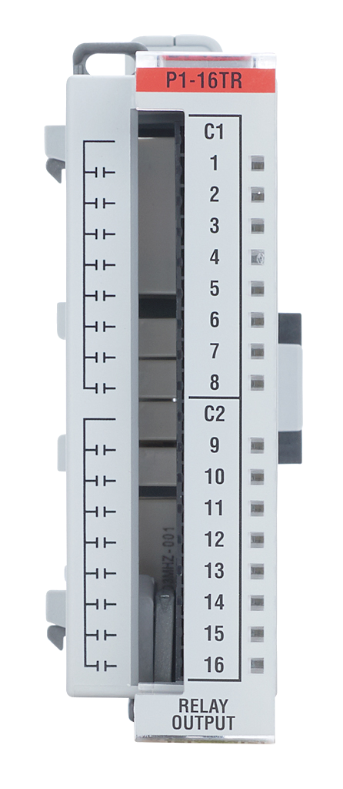

This function writes the state of a single channel.
P1.writeDiscrete(HIGH,1,2); // Turn on slot 1 channel 2This function writes the state of all 16 channels. It turns channels 1-15 on and turns channel 16 off.
P1.writeDiscrete(0x7FFF, 1); // Write state of all channels for slot 1Compatible Functions
Module Configuration and Status Tables
This module does not provide any status data and does not require configuration.

Channels: 16
Discrete Output Type: Relay FORM A (SPST)
Rated Voltage: 6.25–30 VDC, 6–120 VAC
Example: DiscreteOutput
Additional Resources:
Data Sheet
P1-16TR on AutomationDirect.com